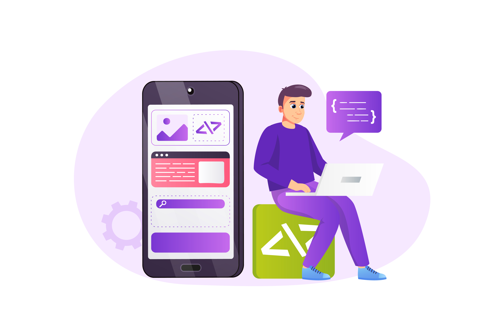

and I am a Passionate

About Me
I am a Frontend Developer and UI/UX Designer with a strong passion for building modern, high-performance, and pixel-perfect responsive web applications. With professional experience in translating design wireframes into clean, interactive frontend code, I specialize in crafting seamless user interfaces using HTML, CSS, JavaScript, and React frameworks.
You can view my source code on GitHub and connect with me on LinkedIn.
My Expertise & Profiles
UI/UX Design
Crafting intuitive wireframes, seamless user flows, and visually stunning interactive interfaces. Specialized in turning complex user problems into human-centric digital solutions.
Frontend Development
Translating modern design files into high-performance, responsive, clean, and interactive code. Building manageable state logic and smooth user journeys across devices.
End-to-End Product Development
Working as an individual engineer on complex academic software systems has equipped me with the foundational capabilities to own the entire product life cycle from scratch to execution.
📋 Requirements & Research Phase
Independently conducted thorough user domain research, compiled rigorous Software Requirements Specifications (SRS), and tracked core system bounds from inception.
📐 Architecture & Design Diagrams
Designed comprehensive structural layouts including detailed Use Case diagrams, Class structural blueprints, and detailed architecture components mapping.
🔀 User Flows & Interaction Designs
Engineered interactive user journeys, micro-interaction flows, dynamic states, and seamless behavioral wireframes to guarantee high-fidelity UX clarity.
🗄️ Database Design & Schemas
Structured transactional logical schemas, mapped out Entity-Relationship Diagrams (ERD), and designed robust relational database frameworks for data safety.
My Projects
🛒 Product Search & Filter System
A dynamic web application built with React and Tailwind CSS. It fetches live catalog data from the DummyJSON API using Axios, featuring real-time category switching and instant product searching.
View Repository →📝 Interactive CRUD Enquiry Manager
A full frontend CRUD application built in React. Manages user records dynamically in state with secure validation checks to prevent duplicate emails or phone numbers during insert and update operations.
View Repository →🌱 GreenSphere (Academic Project)
A web application built to focus on sustainable environment management and handling requirements tracking.
View Repository →🎮 Tic Tac Toe Game
An interactive classic game built with JavaScript, managing live user states and dynamically calculating win/draw logic.
View Repository →🛒 Amazon Clone
A multi-page static landing page clone mimicking core retail layout components and fully responsive styling grids.
View Repository →✂️ Rock Paper Scissors Game
A logic-driven browser application that tracks real-time scores against an automated computer script algorithm.
View Repository →Contact Me
Whether you want to discuss a new project, share ideas, or just say hello, my inbox is always open. Reach me via email at kashifabbasi4224@gmail.com or connect through my social platforms.